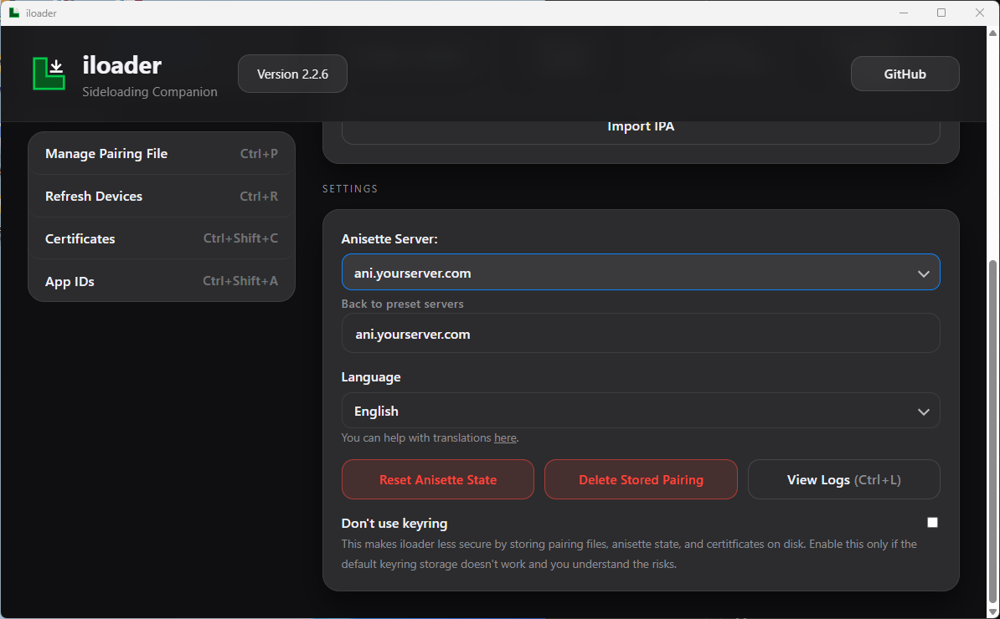
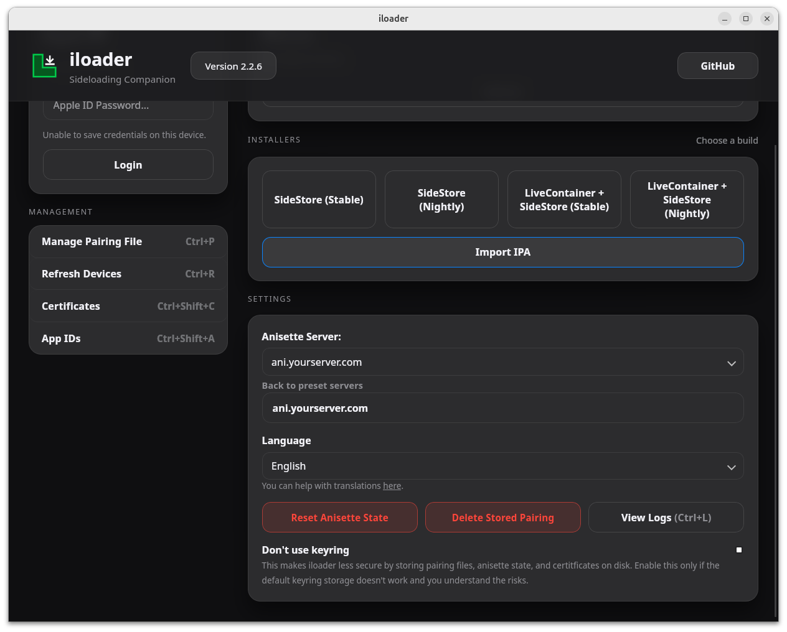
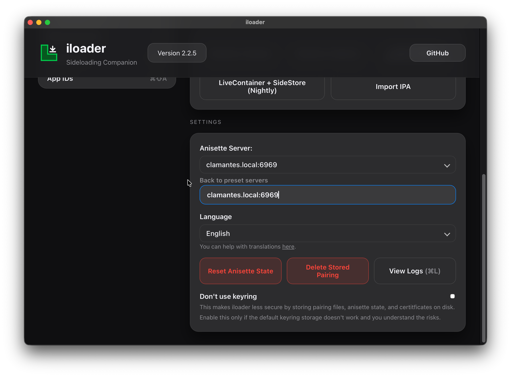
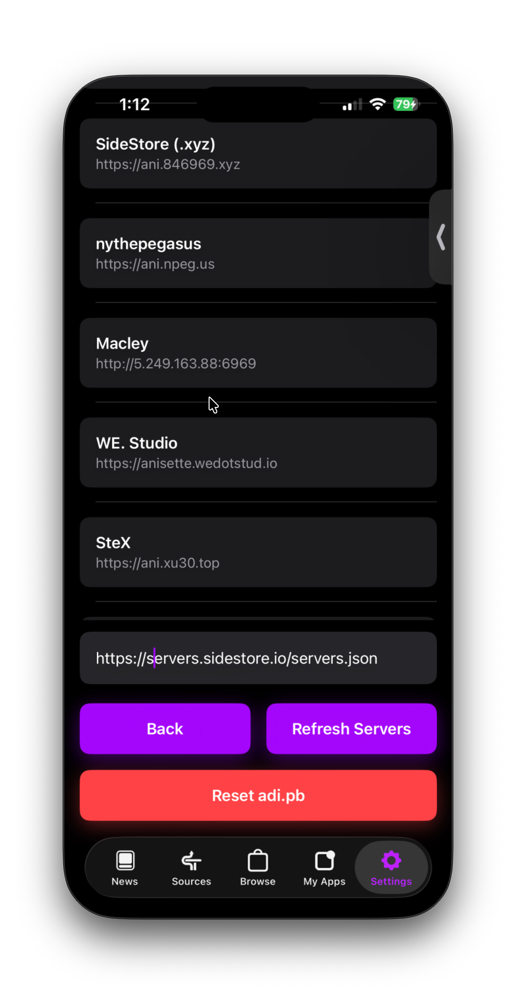
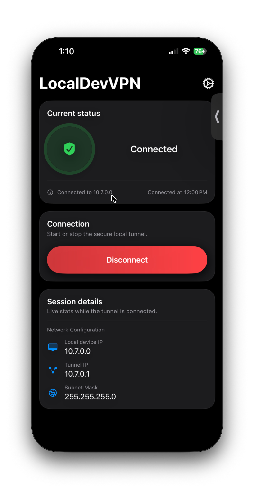
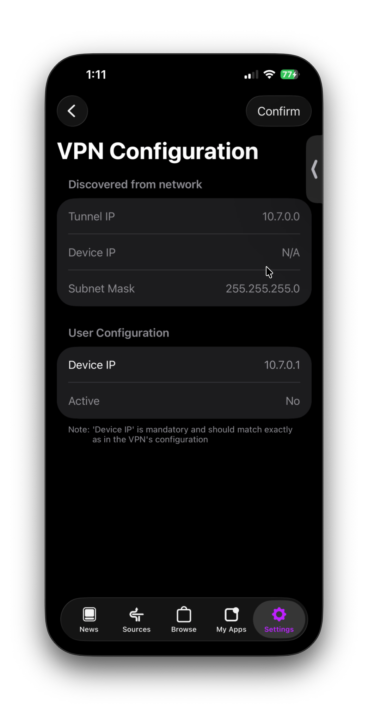
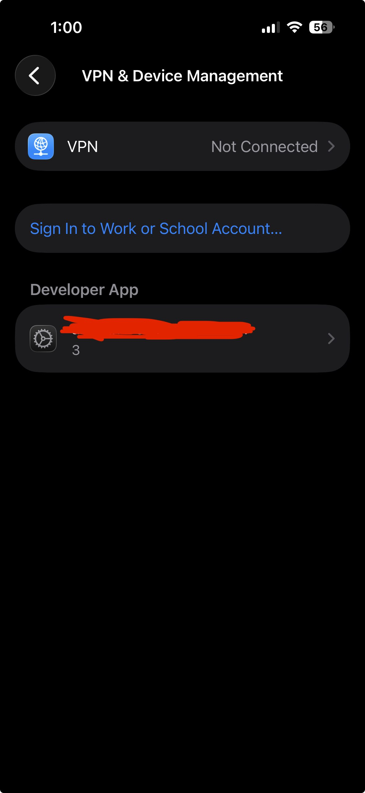
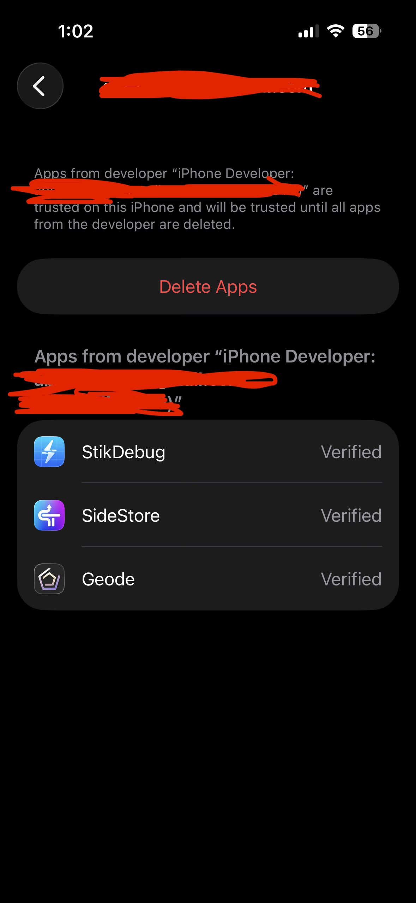

SideStore UDID Fix for iOS 26.4+
Those who are having issues with iLoader and iOS 26.4+ regarding
SideStore, here is a small tutorial on how to fix your pairing file.
Explanation
The reason your pairing file is broken is due to a borked lockdown
pairingfile from the old versions of iLoader. In the newer versions
of iLoader a new method of pairing was implemented, RPPairing. It is
a more stable method of pairing compared to lockdown, and can never
expire. The pairing also stays active when switching to cellular.
Guide
-
If you had iLoader installed before RPPairing was implemented,
delete iLoader and any files related to it off your computer
first before following the rest of the guide.
-
First, make sure you have the latest version of iLoader
installed (2.2.5 or newer).
-
If you already have the latest iLoader installed, make sure you
are logged in to your Apple ID. Scroll down and click "Delete
Stored Pairing">".
Windows:

"
Linux:

"
Mac:

"
This will remove any existing pairing file, but you will
have to pair your phone again. This will get rid of the cached
lockdown pairing.
-
Go back to iLoader, pair your phone again, and install
SideStore.
-
Once SideStore is installed, test an app to see if it installs
correctly. If it does, your pairing file is fixed and you can
use SideStore as normal. If need be, change the anisette server
to 'Macley'.

Extra Steps if the steps above do not work
-
Open LocalDevVPN, find the Tunnel IP address.

-
Go to the SideStore settings, find VPN Configuration, and set
the Device IP to the Tunnel IP address you found in LocalDevVPN.

- Refresh your apps like normal.
Extra Steps if the steps above still do not work
-
Go to Settings, click General, scroll down to "VPN and Device
Management", click your email under "Developer App", and click
"Delete Apps".


-
Go back to iLoader, pair your phone again, and install
SideStore.